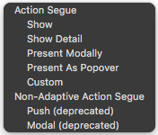
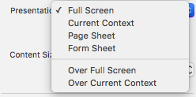

Sesión 1: View Controllers¶
Importante
En estos apuntes de View Controllers verás un ejercicio intercalado, que se irá completando poco a poco. Vale 1 punto de la nota total del módulo de iOS básico.
View controllers. Funciones básicas¶
Los view controllers son la C del MVC. Su tarea más importante es gestionar una jerarquía de vistas. Cada controller tiene una vista “principal” o “raíz” (su propiedad view), y esa a su vez tiene subvistas que por supuesto pueden contener otras subvistas y así sucesivamente.

Hay dos tipos básicos de controladores: los que muestran directamente contenido (content controllers) y los que contienen otros contenedores (container controllers). Estos últimos contienen a otros controladores. Lo que hace el contenedor es redimensionar y colocar la vista principal de sus hijos, pero cada uno de ellos es responsable de mostrar su propio contenido
")
Otras tareas de los view controllers¶
Además de gestionar la jerarquía de vistas, los controladores actúan como el “pegamento” que relaciona la vista con el modelo. El controlador es el lugar típico para poner el código que reacciona a los eventos del usuario, como por ejemplo qué hacer cuando se pulsa un botón.
Es nuestra responsabilidad como desarrolladores asegurarnos de que no colocamos demasiada lógica en el código del controller. La lógica debería ir en el modelo, no en el controller, que debería contener el mínimo código imprescindible para comunicar vista y modelo.
Por otro lado, los controllers son los responsables de adaptar las dimensiones de los componentes de la interfaz a las dimensiones reales de la pantalla. Para ello se usan varios mecanismos: autolayout, size classes y traits, que veremos a nivel introductorio en las siguientes sesiones.
Ciclo de vida de un controller¶
Cada controlador va pasando por una serie de estados conforme se carga la aplicación, se muestra la pantalla que este gestiona, se cambia de pantalla, etc.
Hay tres métodos principales en los que podemos colocar código propio, según el momento en que queramos que se ejecute:
viewDidLoad(): este método ya lo hemos usado en nuestras aplicaciones. Se dispara cuando se carga la raíz de la jerarquía de vistas del controlador. Típicamente se ejecutaría una sola vez en toda la aplicación, y por ello se suele usar para inicializar propiedades del controlador. No obstante si el sistema anda bajo de memoria puede liberar la correspondiente al controlador y como resultado este método podría ejecutarse más de una vez.viewWillAppear(): se ejecuta inmediatamente antes de dibujar la vista.viewDidAppear(): se ejecuta cuando la vista ya se ha dibujado. Útil para colocar código relativo por ejemplo a animaciones.
Los métodos anteriores y sus “complementarios” (con disappear en lugar de appear) se recogen en el siguiente esquema

Instanciar controladores y vistas¶
Podemos hacerlo de varias formas. De más sencilla a más compleja (pero también más flexible)
- Gráficamente, con *storyboards: tanto las vistas como el controlador están en el storyboard*
- Gráficamente, con
.nib: en cada archivonibguardamos una pantalla (con su jerarquía de vistas), pero no el controlador, que se crea por código - Totalmente por código: tenemos que instanciar el controlador y en su método
loadViewcrear la jerarquía de vistas que queremos que contenga (UIView,UIButton, lo que sea) y asignar la raíz de la jerarquía de vistas aself.view.
Dado el tiempo disponible, solo vamos a ver la primera opción con más detalle. En general los storyboards van a ser suficientes para aplicaciones no demasiado complejas.
Navegación con Storyboards¶
Los storyboards son la forma recomendada por Apple de crear interfaces de usuario. Un storyboard contiene la representación gráfica de las “pantallas” (los controladores) que componen nuestra aplicación y de las relaciones entre ellas. Además el sistema se encarga automáticamente de moverse por las pantallas cuando sucedan determinados eventos, instanciando los controladores y las vistas automáticamente.

Ejercicio
Vamos a hacer aquí un storyboard muy sencillo con solo dos pantallas, pero que nos servirá para aprender lo básico de la navegación y el paso de datos entre controladores. De momento:
- Crea el proyecto de Xcode:
File > New > Project.... En la primera pantalla del asistente elige el templateApp, y en la segunda pon el nombre del proyecto,NavegacionStoryboardy asegúrate de que el Interface esStoryboard - En el
Main.storyboardcrea una pantalla con un botón que ponga "Pantalla secundaria" y untext fielden el que escribiremos algo para pasárselo a la siguiente pantalla
El controller inicial¶
En cada momento habrá un view controller inicial que es el que se muestra cuando se carga la aplicación. Se distingue visualmente porque tiene una flecha apuntando a él desde la izquierda:

Para convertir un view controller en inicial, teniéndolo seleccionado ir al icono de propiedades  del área de
del área de Utilities y marcar sobre el checkbox Is initial view controller

También podemos arrastrar la flecha que indica que un controlador es el inicial desde el actual hasta el que queremos convertir en inicial.
El controller de cada pantalla¶
Simplificando, cada pantalla de nuestra app está controlada por una clase descendiente de la clase de UIKit UIViewController. Como ya hemos visto unas cuantas veces, la pantalla inicial de cada app está asociada a la clase ViewController de la plantilla. Puedes ver esto en Xcode, seleccionando con el ratón el view controller y yendo al icono del Identity inspector en el panel de la derecha: .
Para seleccionar el view controller con el ratón pulsa el icono del círculo amarillo con un cuadrado dentro que aparece en la barra de su parte superior.
Otra opción es seleccionarlo en el panel que aparece a la izquierda del storyboard con el árbol de componentes
Ejercicio
(continúa) Selecciona el View Controller de la única pantalla por el momento de la app y simplemente comprueba en el panel de la derecha que la clase asociada es ViewController. Si quisieras cambiar la clase lo harías aquí (¡pero no lo hagas!).
Podemos añadir nuevas pantallas a nuestra app arrastrando al storyboard un componente de tipo View Controller del panel de componentes de UI.
Ejercicio
(continúa) Añade una nueva pantalla a tu app, arrastrando un view controller al storyboard. Está en el mismo panel que el resto de los componentes de UI como botones, labels,...(recuerda que se accede con el botón + de la esquina superior derecha de Xcode). Ahora el storyboard debe mostrar que tienes dos pantallas, aunque por el momento estarán desconectadas entre sí

Por defecto, estos nuevos view controller estarán asociados a clases propias de iOS, y si queremos personalizar su comportamiento tendremos que crear una clase propia que herede de UIViewController e implemente los métodos básicos de gestión del ciclo de vida. En Xcode hay una plantilla para ello. Hay que:
- ir al menú
File > New > File... - En la primera pantalla del asistente que aparecerá seleccionar
Cocoa Touch Class, pulsarNext - Poner un nombre a nuestra clase, por ejemplo
ViewControllerSecundarioy enSubclass ofponerUIViewController, ya que necesitamos que herede de esta clase. El resto de opciones las dejamos por defecto. PulsarNext - Finalmente nos dejará elegir dónde guardar físicamente el archivo swift, podemos dejarlo por defecto y pulsar
Create
Si todo va bien verás que entre los archivos del proyecto aparece la nueva clase creada y que tiene la estructura tipica de un view controller (tiene por ejemplo un viewDidLoad).
Ejercicio
(continúa) Sigue las instrucciones anteriores para crear una clase ViewControllerSecundario, que después asociaremos a la pantalla secundaria.
Ya solo nos queda asociar la clase creada a la "pantalla" del storyboard. Recordemos que eso se hace en el Identity inspector del panel de la derecha.
Ejercicio
(continúa) Teniendo seleccionado el view controller de la segunda pantalla que añadiste al storyboard (recuerda, icono del círculo amarillo con un cuadrado dentro) ve al Identity inspector y cambia el Class por ViewControllerSecundario.
Para comprobar que funciona:
- Mete un
print("hola, soy el controller secundario")en elviewDidLoad()delViewControllerSecundario - Como las pantallas todavía están desconectadas y no se puede llegar a la segunda desde la primera, puedes hacer temporalmente que la segunda sea la inicial arrastrando a ella la flecha que indica que es controlador inicial

- Ejecuta la app, y como la pantalla inicial ahora es la segunda y su controller el
ViewControllerSecundario, debería aparecer en la consola de Xcode el mensaje dehola, soy el controller secundario. - Acuérdate de dejar otra vez la primera pantalla como pantalla inicial arrastrando la flechita que lo indica.
Segues¶
Son las transiciones entre los controllers. Podemos crear un segue visualmente con Ctrl+Arrastrar entre un elemento cualquiera de un view controller (por ejemplo un botón), que será el de controller de origen, y el controller destino. Se nos dará a elegir el tipo de *segue* en un menú contextual.

Tipos básicos de segue¶
Como vemos en el menú contextual hay cuatro tipos de segue. Dos de ellos son mostrar (show) y otros dos presentar (present). Además podemos programar nuestro propio tipo de segue con custom.
- Show es la forma recomendada habitualmente, ya que permite que el controlador actual “decida” cómo mostrar físicamente el nuevo. Por ejemplo si el controlador actual “ocupa” toda la pantalla, el nuevo también lo hará, pero si por ejemplo es un tab bar controller solo cambiará la parte de la pantalla que muestra contenido, no la barra de herramientas

- Present quiere decir que el nuevo controller se mostrará de forma modal, de manera similar a cuando en un interfaz gráfico se muestra por ejemplo un cuadro de diálogo modal. No obstante esto no quiere decir que el controller antiguo se siga viendo “por debajo”, ya que en dispositivos con tamaño de pantalla limitado el nuevo ocupará toda la pantalla.
Como vemos en el menú contextual, en el caso del show se distingue además entre Show “a secas” y Show detail. El primero es el indicado cuando el nuevo controller va a sustituir completamente al anterior y el segundo cuando el nuevo es “secundario” con respecto al anterior (como en el ejemplo que poníamos del tab bar.
En el caso del present, se distingue entre Present Modally y Present As Popover. El primero sería lo que todo el mundo entiende por “modal”: el nuevo controller se pone “encima” del anterior. El segundo es el típico popover que aparece en el iPad.

En realidad la forma concreta de mostrar exactamente el nuevo controlador la decide iOS dependiendo de las dimensiones actuales del dispositivo. Por ejemplo en un iPhone SE en vertical no aparecerá un popover aunque lo especifiquemos, la que la pantalla es muy pequeña para ello.
Podemos configurar las propiedades del *segue* haciendo clic sobre él y yendo al icono de propiedades del área de Utilities. Aquí podemos cambiar el tipo y también la transición usada para navegar de una pantalla a otra.
Ejercicio
(continúa...) Agrega un segue entre el botón de la primera pantalla y la segunda, recuerda que debes usar Crtl+arrastrar. Ejecuta la app para comprobar que efectivamente se cambia de pantalla pulsando en el botón, aunque de momento no podrás volver atrás (luego veremos cómo se hace).
Estilos de presentación y de transición¶
Podemos usar diversos estilos a la hora de presentar de forma modal un controller. Por ejemplo podemos indicar que el nuevo controlador debe ocupar toda la pantalla, o bien solo el alto dejando una zona a los lados, o bien un recuadro central como un cuadro de diálogo…

Estos estilos se definen en una propiedad del controller a presentar, y no del *segue. En Xcode podemos cambiarlos con la propiedad Presentation en el attribute inspector del controller*:

En Swift especificamos el estilo dando valores a la propiedad modalPresentationStyle del controller que vamos a presentar.
Por otro lado, también podemos especificar una animación para la transición entre el controller actual y el siguiente. De nuevo es una propiedad del controller destino, no del segue. En Xcode se controla gráficamente con la propiedad Transition style del inspector de atributos. En Swift con la propiedad modalTransitionStyle del controller a presentar.
Pasar datos de un controller a otro en un segue¶
Cuando se va a saltar de un controller a otro a través de un segue, se llama al método prepare(for:sender:) del controller origen. Podemos sobreescribir este método para pasarle datos al controller destino. El primer parámetro va a instanciarse al segue y a partir de este podemos obtener una referencia al destino.
Por ejemplo supongamos que tenemos dos controller conectados por un segue, y este se dispara con un botón en el primero.
Supongamos que el primer controller es un objeto de la clase ViewController, mientras que el segundo es de la clase ViewControllerSecundario. En el código de ViewControllerSecundario podría haber algo como:
1 2 3 4 5 6 7 8 | class ViewControllerSecundario : UIViewController { var mensaje = "" override func viewDidLoad() { super.viewDidLoad() print(self.mensaje) } } |
Es decir, imprimimos un mensaje cuando se carga la pantalla (lo normal sería mostrarlo en un label o similar, pero para los propósitos de este ejemplo nos basta con que salga en la consola).
Podemos acceder a esta propiedad texto desde el controller anterior sobreescribiendo el método prepare(for:sender:)
1 2 3 4 5 6 7 | override func prepare(for segue: UIStoryboardSegue, sender: Any?) { if (segue.identifier=="siguiente") { if let vc2 = segue.destination as? ViewControllerSecundario { vc2.mensaje = "Bienvenidos a la pantalla 2" } } } |
Ejercicio
(Continúa...) prueba el código anterior en la app y comprueba que efectivamente cuando se pasa de una pantalla a otra, la información se está pasando de un controller a otro. En lugar de tomar un mensaje fijo "bienvenidos a la pantalla 2", haz que se pase e imprima lo que se escriba en el campo de texto de la pantalla 1.
Volver atrás en un segue¶
Aunque podemos crear un segue de modo visual, no podemos configurar visualmente cómo volver a la pantalla anterior cuando hemos seguido un segue. Esta “vuelta atrás” se llama unwinding y para conseguirla tenemos que escribir algo de código.
En el controller al que se vuelve atrás debemos implementar lo que se llama un unwind action, un método que puede tener el nombre que deseemos pero debe tener una signatura específica:
- Está marcada con un
@IBAction - Tiene como único parámetro un
UIStoryboardSegue, que es el segue que se está usando para volver atrás. Por ejemplo
1 2 3 | @IBAction func miUnwind(segue: UIStoryboardSegue) { print("Volviendo atrás por \(segue.identifier)...") } |
Ahora en la pantalla que dispara el unwind debemos conectar usando Ctrl+Arrastrar el elemento de interfaz que produce la vuelta atrás con el icono de Exit que aparece en la parte de arriba.

Si intentamos hacer esta operación de
Ctrl+Arrastrarsin haber implementado el método anterior, veremos que no tiene efecto
En el método del unwinding, nótese que podemos usar el parámetro, que es el segue, para obtener el destination, que ahora será el controller al que volvemos.
Ejercicio
(Continúa...)
- Crea un botón "Atrás" en la segunda pantalla
- Implementa un unwind action en el
ViewControllerSecundario, recuerda que debe ser un método marcado con@IBActiony con un parámetro de tipoUIStoryboardSegue - Conecta gráficamente el botón "Atrás" con el icono de "Exit" de la segunda pantalla.
comprueba que ya se puede ir adelante y atrás en el segue
Finalmente, decir que cuando se produce un unwind, el controlador desde el que se vuelve también recibe una llamada a prepare(for:sender:), método que podemos sobreescribir si queremos aprovechar para realizar alguna operación antes de volver.